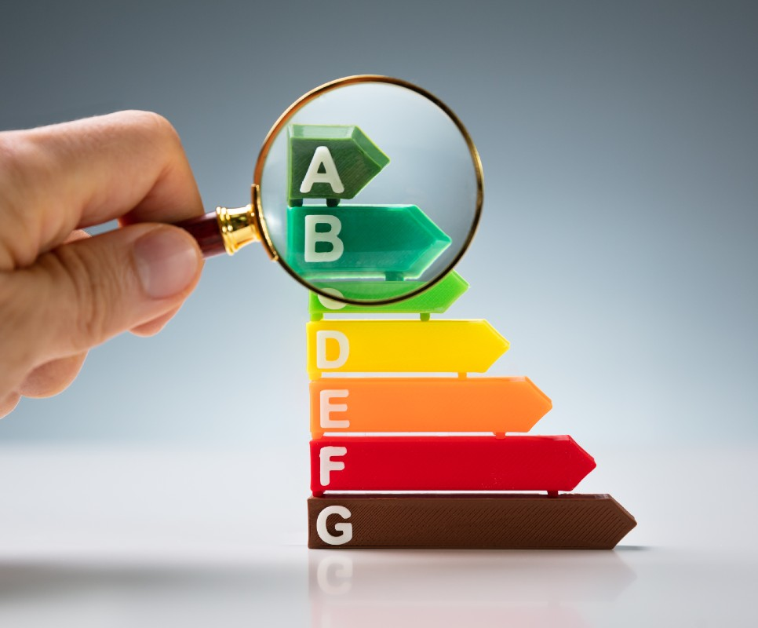
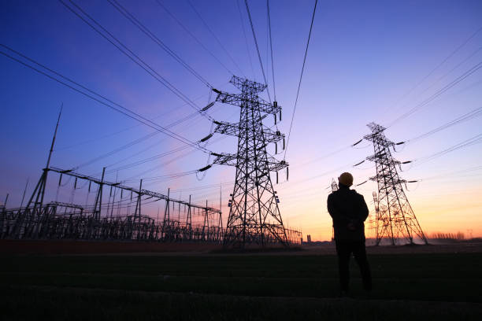

El consum elèctric anual de la institució es veu afectat principalment per les variacions estacionales...
El consum mensual oscil·la entre 12.000 - 15.000 kWh.
Cost mensual estimat:
Cost total anual per aquest període (3 mesos):
El consum d’aigua també presenta variacions significatives a llarg de l'any...
Consum entre setmana: 8.000L/dia
Consum durant el cap de setmana: 5.000L/dia
Consum mensual total: 208.000L